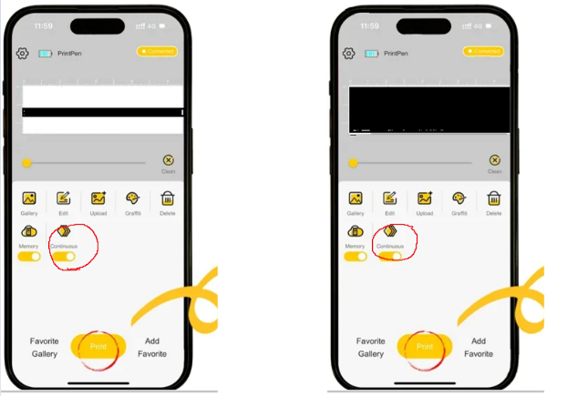

Systems Engineering Project 2
A System Engineering focused Project, that builds upon the foundation learnt in SEP1 to further develop Practical and Applicable System Engineering Knowledge. This part details the initial conception, and the decisions made.
Project Objective
The main objective of this project was to leverage the technical knowledge from Systems Engineering (SE) and the technical skills in Mechanical, Electrical, and Software Engineering to prototype an improvement for the existing Evebot Food Printing Pen. The project team included 5 members who each contributed equally to the project, with each member focusing on different areas to optimize productivity. My main focus was research domains, find Oppurtunites but to also tailor the SE Proceeses to align and aid our project.
Initiation
Iron Triangle of Project Management
Understanding how to prioritize and when to decide on outcomes is crucial in project management. The Iron Triangle helps us keep to our project goals with the key contraints of Scope Scedule and Budget.
- Scope: The project was an innovation on existing product that could quantify as a 1.5 or 2.0 version. It does not require a overhaul.
- Schedule: The project was done in 1 trimester; 13 weeks. There were strong deadlines for the finalized concept in week 5, and the protoype by week 13. Hence, preventing stalling of process was a key consideration throughout the project, to prevent missing dealines, and keep the project team on track.
- Budget: The budget given to this project was $600 SGD. Hence, keeping to this budget was key even during Conception of the protoype, so that when designing and implementing the System, they would be able keep within budget
Agile Methodolgy
Agile Methodolgy was selected to be ultilzed, due to the iterative nature of the project, and the potential for rework.
The initial Sprints were spaced as such:
- 3 Day Sprints: During the Start when research was much less contraint, and rework was not an issue
- 1 Day Sprints: During sections of the project where heavy rework was required and the project was much more constrained.
Possible Types of Solutions
We can look at solutions with 2 Perspectives: Push and Pull.
- Push: Identifying an opportunity or solution that the domain may not currently need but could benefit from upon creation.
- Pull: Identifying the needs within relevant domains and finding functionalities that could meet these needs.
For both of these perspectives, a starting point is required. We begin with the Problem Space.
Problem Space
In the Problem Space, we aim to define an opportunity or problem. Given that the outcome is an Evebot that produces something edible, we initially explored 2 domains: food and food printing domains for potential needs. Concurrently, we examined functionalities that could meet these needs using two main methods:
- Fuzzy Notion: Using Needs "meaning" rather than schemantics of words to do exploratory research
- Occam’s Razor: Exploring functionalities within the food printing domain that could be repurposed.
Some examples of the researched domains includes:


Research Credits for elderly foods to Team Member: Kaushik:
As mentioned before, due to the time constraints of the project, ideas that seem improbable as a solution when researching should be dropped early to prevent delays, and hence, the approach of the hump diagram is used.
Hump Diagram
The Hump Diagram, despite looking complex, emphasizes that all processes in Systems Engineering occur concurrently, with varying emphasis at different stages. Even during the idea conception phase, design considerations must be taken into account. This perspective allows us to eliminate impractical research ideas that does not fit within the constraints of the project early on.
Concept of "Fuzzy"
Adaptation
As we generate innovative solutions during the Concept Definition phase, many ideas will be "fuzzy" or vague. The needs from various domains and the functionalities to address them might not be immediately clear.
For example, in the space domain, food printing is desired because transporting food from Earth to space is expensive. Potential solutions, such as using recycled materials as filament, may not be apparent through keyword searches alone. Broader concepts like repurposing or reusing materials can provide unexpected solutions from other domains.
An illustrative example is the space and origami domains. When optimizing how to pack large objects into rockets, such as the Webb telescope, researchers looked to origami for solutions. This connection would have been hard to identify with traditional keyword searches.
Failed Design Concepts
Several concepts were explored but most of them were ultimately discarded for various reasons:
Pull Type Solutions:
- Reused the Evebot without significant innovation.
- Required extensive modifications to the Evebot, conflicting with project constraints.
- Demanded domain knowledge beyond the team's expertise.
Push Type Solutions:
- Blind User Aided Evebot: Assisted blind users with a machine vision camera (Pixycam) and audio cues. Applications: Restaurants employing disabled individuals. Problems: Can be resolved with automated printers; niche audience.
- Handheld 3D Food Printer Evebot: Created 3D printed edible structures using a technique similar to binder jetting. Applications: Various domains. Problems: Requires chemistry expertise; Evebot’s output is insufficient.
- Software Update for Larger Images: Allowed image uploads to print sections of a larger image. Applications: Various domains. Problems: API limitations; can be done manually but is tedious.
Drawing Credits to Team Member: Kaushik:
Drawing Credits to Team Member: Reuben:
Oppurtunity Worth Pursuing
We decided on creating an adapter for freehand sketching with the Evebot. Applications are across various domains. Logical and practical to pursue.
Solution Space
The finalized solution involves creating an adapter for the Evebot that allows for freehand sketching. This solution was chosen for its practicality and potential applications across various domains.
Rationale
There is an feature on the properitary app to adjust the thickness and allow for continous printing. This allows for the added functionalites to work without having to go through the hurdle of editing the API
Biggest Selling Point of the Evebot
- Portability: Handheld size makes it easy to carry and use.
- Additional Feature: Can be marketed as a new feature to attract new customers and encourage existing customers to buy the adapter.
Justifications
- No freehand food-safe inkjet printer (handheld) currently exists.
- Existing edible ink pens/markers offer only single color and single thickness, limiting their functionality.
- Cannot be used on liquid or soft food items. Brushes can be used but may disrupt the food compared to inkjet printing.
Analogous Justification
- Despite the existence of brushes and quills for centuries, writing tools have evolved (e.g., ballpoint pens).
- Even though inkjet printers can print paintings, many people still prefer hand-drawn paintings for the human touch.
- Apple Pencil: Comparison between normal pencils, knock-off Apple Pencils, and real Apple Pencils in terms of cost and features.
Enabling Systems/Elements
- The Evebot App and compatible food products.
- Should be flexible with other handheld inkjet printers, accounting for the diameter of the wheel and size of the printer, allowing plug-and-play during System Realization.
Iteration
The project underwent several iterations to refine the design and functionality of the freehand Evebot adapter, ensuring it met the project's objectives and constraints. It went from Version 1.0 to Version 1.4
Initial Functionalites
- Omni Directional movement using the Evebot
- Ability to Vary Thickness during Sketching
Overarching Iteration Drawing
Version 1.0 to 1.2
Version 1.2 to 1.4
Version 1.0 to 1.1
Version 1.0 was initally intended as complelety mechanical system. It is indended to transfer 360 degree Kinetic Energy to linear 90 degree (in one direction). However, further technological reserach is required to achieve this. Hence, 1.1 was created.
Version 1.1 to 1.2
Version 1.1 uses touch sensor, motors and MCU to drive evebot wheel. However, the Issue is its inablity drawing on Soft/Liquid surface. Version 1.2 was made to solve this.
Version 1.2 to 1.3
The Version 1.2 Auxiliary Ruler introduces an evolution allowing for freehand drawing. This improved ruler can fit on larger objects, enhancing its versatility. However, a notable design issue is that the point of ink extrusion does not align with the point touching the paper, affecting precision. Additionally, it is less ergonomic for the user
Version 1.3 to 1.4
Version 1.3 introduces a spring system to ensure that the point of ink extrusion aligns with the center point of contact. Version 1.4 replaces the touch sensor with an accelerometer to achieve more accurate ink dispensing. Testing is needed to determine if further iteration is required.
Finalized Functionalites
- Omni Directional movement using the Evebot
- Ability to Vary Thickness during Sketching
- Able to Draw on Liquid/Soft Food Surfaces
- Able to Draw ergonomically
- Able to Adapt to Various inkjet handheld printers
Future Work
Future work includes further refining the freehand Evebot, exploring additional applications, and potentially developing complementary features to enhance its functionality. To fully Realize it to meet the project objectives